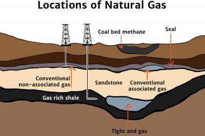

Natural Gas
Natural gas is a non-renewable fossil fuel formed from the remains of tiny sea plants and animals that died 300-400 million years ago. Approximately 90% of natural gas is composed of methane, but it also contains other gases such as propane and butane.
How is natural gas formed?
300-400 million years ago, the remains of tiny sea plants and animals sank to the bottom of the oceans, where they were buried by sediment that turned into rock.
Over the years, the layers of rock became thousands of feet thick, putting the energy-rich plant and animal matter under a lot of pressure. Eventually, the pressure and heat changed this organic mixture into oil (petroleum) and natural gas.
Natural gas became trapped in the rock layers – much like water is trapped in a wet sponge.
Where is natural gas found?
Natural gas can be tricky to find, as it's generally trapped in rocks located deep underground. To find natural gas deposits, geologists may:
- Look at surface rocks to find clues about underground formations.
- Set off small explosions or drop heavy weights on the Earth's surface, in order to record the sound waves as they bounce back from the underground rock layers.
- Measure the gravitational pull of rock masses deep within the Earth.
If a site looks promising, wells may be drilled to find the natural gas deposits – as these wells average almost 9000 feet deep and can cost hundreds of dollars per foot to drill, it's important to choose natural gas sites carefully!

Are there other sources of natural gas?
Yes. Natural gas can also be found in seams of coal, called coalbed methane, as well as in the methane produced in landfills.
While natural gas is considered a non-renewable energy source, landfill gas is a renewable source of methane, as it comes from decaying rubbish.